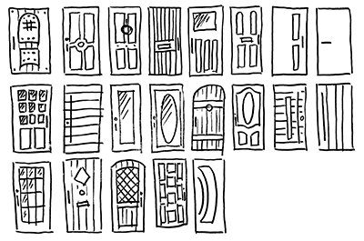

Front Doors V.0.0
http://muraker.github.io/front-doors
1. Config
- Reset (Normalize)
- Configuring (SCSS by element: desktop / mobil)
- Space (padding, margin, line-height, etc.)
- Color and tints
- Breakpoints
- Border radius
2. Sources
Global
- Color and tints
- Fonts
- Space (padding, margin, line-height, etc.)
- Breakpoints
- Border radius
- Animation (fade, bounces, etc.)
- Visibility
- Float
Text (Typography)
- Headings
- Paragraph
- Blockquote
- Inline Elements
- Time
- Hr
Lists
- UL
- LI
- OL
Buttons
Images
- Logo
- Favicons
- Icons
- Loading Icon
Code
Forms
-
Text Fields
- input[type="text"]
- input[type="password"]
- input[type="url"]
- input[type="email"]
- input[type="search"]
- input[type="number"]
- textarea
- Bonus: html5 inputs
Select menu
- Checkbox
Radio Buttons
Error
- Valid
- Disable
Tables
Animation (fade, bouncs, etc.)
Alerts
Tooltip
Utility classes
Embed (and responsive embed)
3. Modules
Native
- Text
- Blocks
- Media
- Forms
- Navigation
- Components
Messaging
Breakpoint
- Layout (Container / Grid / Column)
Plugins
- :nth-child
- Mobile nav
- Modal
- Dropdown
- Tab
- Slider
- Player audio / video
- inputRange
- Collapse / Accordion
- Push notification
4. Components
- Header
- Footer
- Article
- Comments
- Posts
5. Templates
- Head (https://github.com/joshbuchea/HEAD)
- Homepage
- Article
- Etc.
|─────|
| |
|─── /|
| / |
|/────|
Front Doors
NEXT STEP : The Back Doors :)